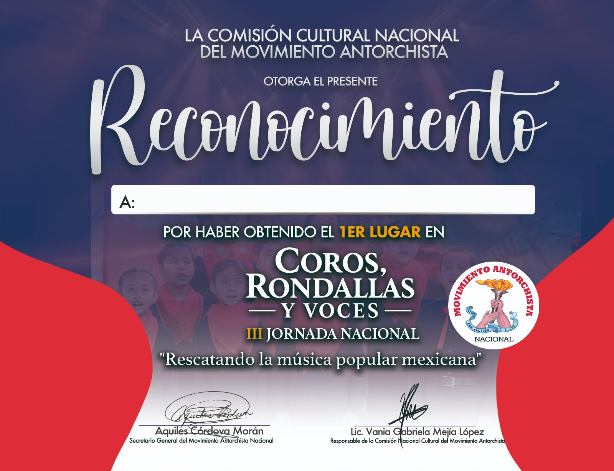

Un espacio para nuestra cultura, nuestro talento y nuestra música.
Inicia sesión para abrir el panel del concurso.
Los registros se guardan en línea. Necesitas conexión a Internet. Acceso autorizado por rol.